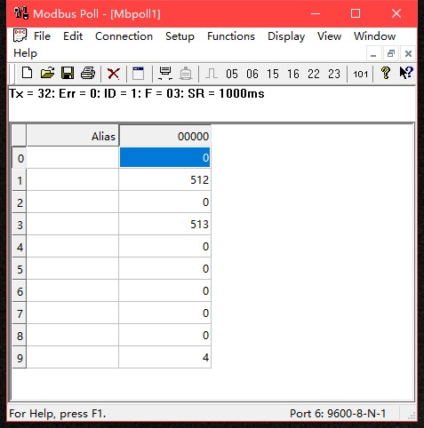

Modbus RTU协议使用¶
模式切换¶
ASCII -> Modbus¶
在ASCII模式的命令模式下，即在工作模式在 0~3 时，输入OPEN ID之后，输入MODE 4。 能见度传感器 将自动重启至 Modbus RTU模式。
Modbus -> ASCII¶
在Modbus RTU模式下，修改寄存器9 的值为 0~3，则 能见度传感器 自动重启至ASCII模式。
Modbus RTU 通信参数¶
modbus地址的修改需要进入 工作模式0~3 ，使用 ID命令来修改
modbus地址为 ID命令输入的数值加一，默认为 1。范围为 1~101
串行通信参数与工作模式0~3共用，须在ASCII模式下修改
Modbus RTU 寄存器地址映射¶
保存寄存器地址 含义 字节数 操作 0 15秒能见度高16位 2 只读 1 15秒能见度低16位 2 只读 2 60秒能见度低16位 2 只读 3 60秒能见度低16位 2 只读 4 报警状态 2 只读 5 报警阈值1高16位 2 读写 6 报警阈值1低16位 2 读写 7 报警阈值2高16位 2 读写 8 报警阈值2低16位 2 读写 9 工作模式 2 读写 10 天气现象 2 只读 注解
天气现象功能仅在特定型号传感器上有效
能见度与报警阈值格式
数值=高16位 * 65536 + 低16位
报警状态格式
高字节为阈值报警状态
60秒能见度 范围 数值 小于阈值1 2 大于阈值2 0 其他 1 低字节为设备故障状态
定义 数值 含义 详细 #define POWER_ERROR 0x01 供电电压异常 小于9V #define TEMP_H_ERROR 0x02 激光头高温超限 大于50摄氏度 #define TEMP_L_ERROR 0x04 激光头低温超限 小于0摄氏度 #define LENS_ERROR 0x08 镜头污染 工作模式
读取时为4写入范围 0~3。 写入后自动重启至新的工作模式。
- 天气现象
仅特定型号有效。15~30s内的瞬时天气状态，准确率90%。
数值含义:
0x0 //晴 0x10 //大雨 0x11 //中雨--- 0x12 //小雨--- 0x20 //大毛毛雨 0x21 //中毛毛雨---- 0x22 //小毛毛雨---- 0x32 //大雪 0x33 //中雪 0x34 //小雪 0x40 //烟 0x50 //雾 0x60 //冰雹或高空坠物 0x99 //飞虫或异常遮挡
Modbus RTU通信示例¶
读取所有寄存器
000000-Tx:01 03 00 00 00 0A C5 CD 000001-Rx:01 03 14 00 00 01 FE 00 00 02 00 00 00 00 00 00 00 00 00 00 00 00 04 D0 CA

读取 60s能见度:
000018-Tx:01 03 00 02 00 02 65 CB 000019-Rx:01 03 04 00 00 01 FE 7A 23 #能见度为510m设置报警值:
000000-Tx:01 10 00 05 00 04 08 00 00 00 64 00 00 4E 20 FF C6 #低阈值100，高阈值20000 000001-Rx:01 10 00 05 00 04 D1 CB切换工作模式到0:
000000-Tx:01 06 00 09 00 00 59 C8